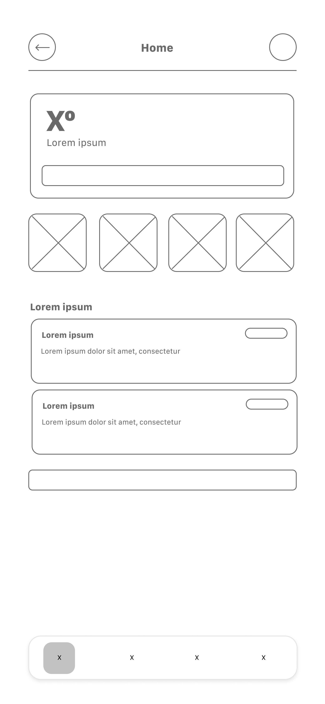
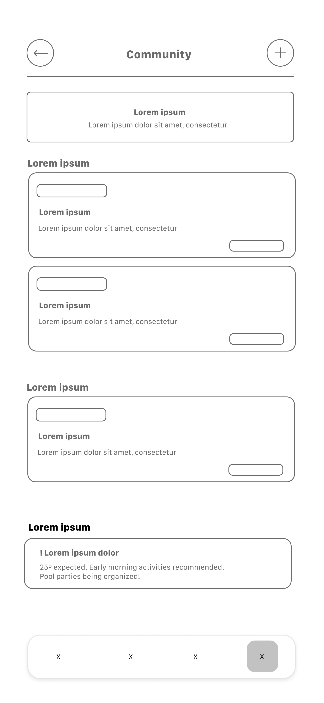
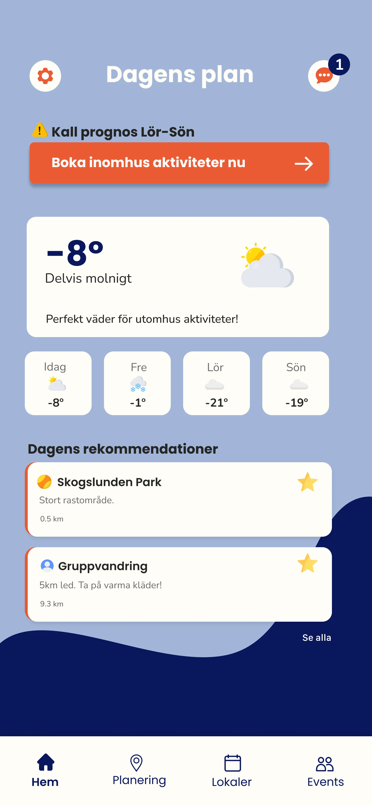
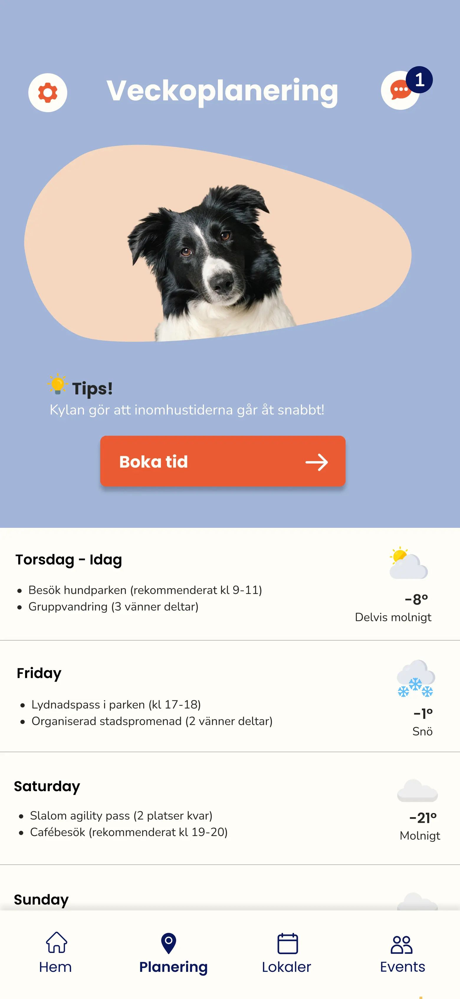
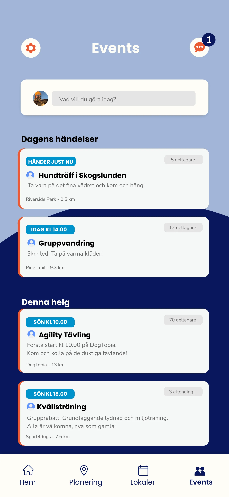

Befintliga appar tillhandahåller information, men hjälper inte till att omsätta förutsättningar till praktiska och interaktiva aktivitetsbeslut.
Idégenerering
Initiala koncept togs fram med manuella och AI-genererade wireframes för att utforska gränssnitt och flöde från väderdata till aktivitetsförslag.


Design Beslut
Visa aktuellt väder först, med matchande aktivitetsförslag.
Möjliggör snabba val med låg kognitiv belastning och filter.
Koppla event och platser till lokala förhållanden.
Utveckla Lösning
En high-fidelity Figma-prototyp testades i tre omgångar med sex hundägare via Think-Aloud och semi-strukturerade intervjuer, vilket gav insikter för iterativa förbättringar.



Större Iterationer
Användartester visade behov av en mer fokuserad layout, där viktiga beslut prioriteras tidigt och fördjupning möjliggörs senare.
Framtida utveckling kan utforska funktioner på lägre nivå och varumärke, samt ökad personlig anpassning och samarbeten med lokala platser för att underlätta beslut för hundägare.